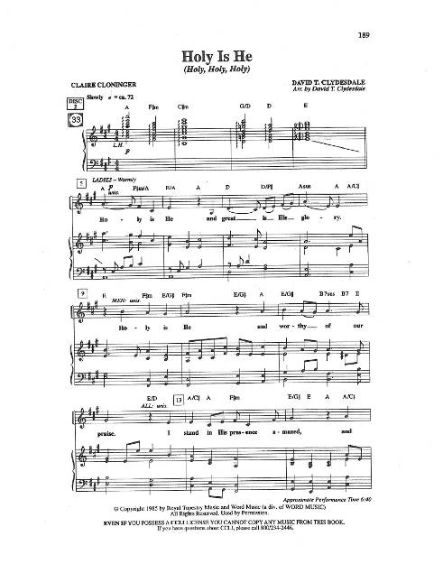

|
¡@ |
¡@¡iÍ¢¥»¬°¸t¡j |
|
Who pardons my iniquities, who heals me from within, |
|
|

|
|
|
¡@ |
¡@ |

-
Í¢¥»¬°¸t(HOLY IS HE;¥x:Í¢¬O¦Ü¸t)
°ê»y¦ñ°Ûµ¼Ö
-
Í¢¥»¬°¸t@¦t©z¥ú¦Ê¤H¤j¦X°Û2013¦~°ê®aµ¼ÖÆU¤½ºt
-
¥þµM¸t¼ä¥D Holy is He (
¦± : David T. Clydesdale )
²Ä11
©¡
¸t¸Ö¹|°Û·| 2012¦~
,
«ü´§ :
¸¦¨ªÛ
-
¥þµMÉoÏ¡¥D Holy Is He, by David
Clydesdale
Cloninger, Claire, 1942-2019
［µü¡A¦±§@ªÌ］
https://hymnary.org/person/Cloninger_C
Claire Cloninger (August
12, 1942 ¡V August 15, 2019) was an American songwriter of contemporary
Christian music, author and speaker.[1] She
(co-)wrote hundreds of songs, including You Gave Me Love When Nobody Gave Me
A Prayer with Archie Jordan for B.
J. Thomas, Friend of a Wounded Heart for Wayne
Watson (who was also a co-writer),[2] and
songs for Sandi Patty and Paul
Overstreet.[1] She
authored 18 books,[2] including Making
¡¥I Do¡¦ Last a Lifetime, Dear Abba: Finding the Father¡¦s Heart Through
Prayer, and Postcards for People Who Hurt.[1] She
won six Dove
Awards from the Gospel
Music Association.[2]